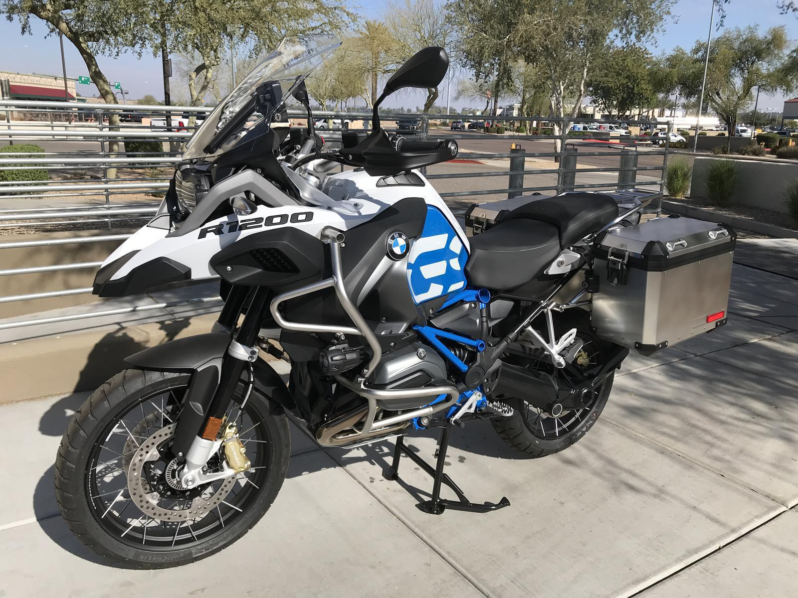
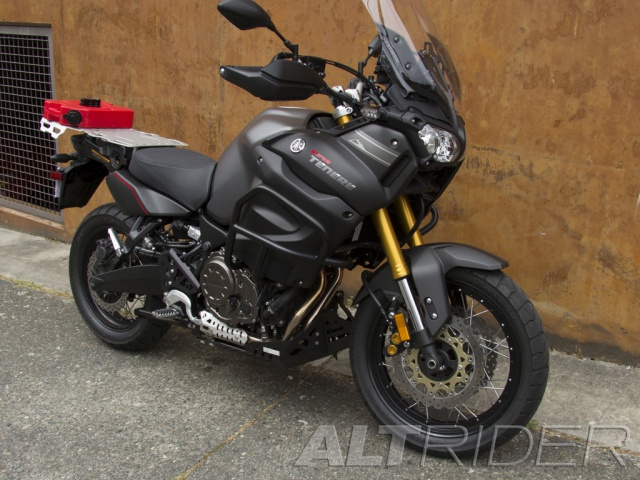
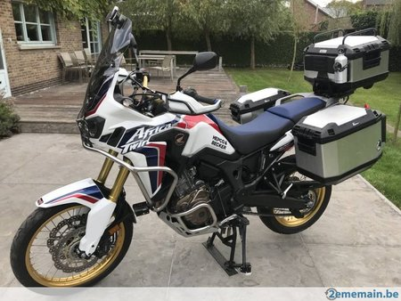

BMW
The BMW R1200GS and R1200GS Adventure are motorcycles manufactured in Berlin, Germany by BMW Motorrad, part of the BMW group. It is one of the BMW GS family of dual sport motorcycles. Both motorcycles have a 1,170 cc (71 cu in), two-cylinder boxer engine with 4-valves per cylinder. The Adventure has a larger capacity fuel tank and longer travel suspension. As of 2012, BMW's R1200GS bikes are their top-selling models.
Yamaha
The Super Ténéré ES returns for 2019 without its stablemate, the Super Ténéré. The “ES” brings all the adventure capability that gave the Ténéré its name. A compact 1,199 cc parallel-twin engine coupled with the wide-ratio six-speed transmission carries you over hill and dale and back to the pavement with aplomb.
Honda
Honda claim the new CRF1000L Africa Twin offers true adventure with the comfort of a tourer and the agility of a commuter and the ability to make dirt roads a joy. All we know is the legendary Africa Twin name is back, and we've ridden it in South Africa. Here's our full review and test.